Reagir atrasado
- Tentar lembrar a sequência
- Forçar quando algo muda
- Cansar antes de decidir
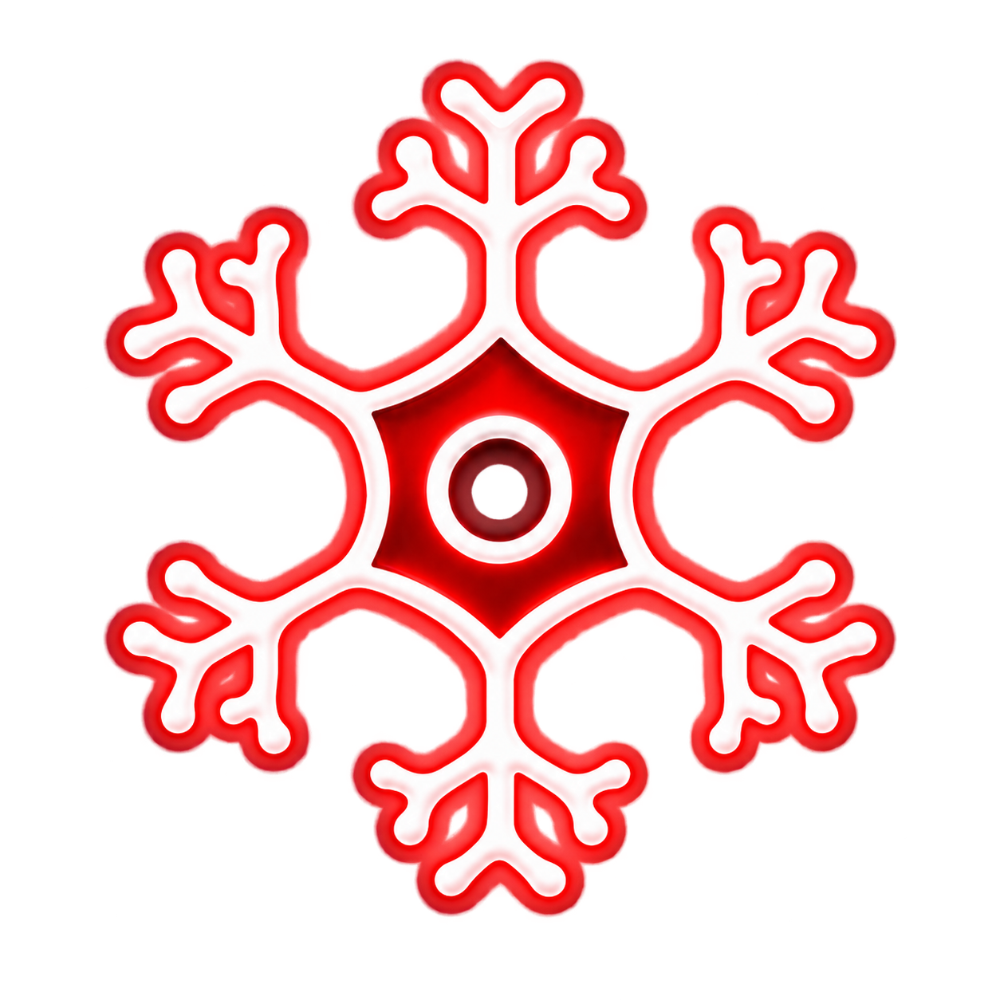
NEUROJITSUMétodo Neuro-Jitsu
Entenda a lógica por trás do Jiu-Jitsu para cansar menos, decidir melhor e agir com intenção — mesmo quando o rola aperta.
Aplicado no tatame.
Por iniciantes,
graduados e professores.
Assista antes de decidir.
Entenda por que
seu Jiu-Jitsu trava no rola.
Treinar sem consciência custa caro
Na aula, a posição funciona porque o problema já vem montado. No rola, base, peso, pegada e direção mudam o tempo todo.
Quando você aprendeu apenas a sequência, uma reação diferente desmonta tudo. Aí você compensa com força, perde o gás e volta a sobreviver.
Resultado no tatame
Quando os princípios ficam claros, o treino deixa de parecer um caos. Você passa a perceber o que antes acontecia rápido demais.
18 relatos reaisArraste ou use as setas para ver mais.
Arthur levou a clareza do método para o rola e finalizou um faixa roxa pela primeira vez.
Em um rola de cinco minutos, virou a posição, pegou as costas e finalizou no estrangulamento.
Mais raciocínio, menos força desnecessária, respiração melhor e um rola mais fluido.
Laiza destacou a qualidade do curso e a evolução percebida treinando com um instrutor faixa roxa.
Rozimeire passou a se sentir mais segura para colocar em prática tudo o que estava aprendendo.
Lucas aplicou os vídeos no treino, deu trabalho para um faixa azul e acertou um ippon seoi nage.
Amanda estruturou melhor os rolas e chamou o material de ponto de virada na evolução.
Entender o corpo, controlar o oponente e buscar eficiência tornou o jogo mais claro.
Ezequias abriu novas possibilidades de ataques, defesas e raspagens ao mudar sua forma de pensar.
Gil percebeu melhora na postura, nas pegadas, no Judô e na distribuição de peso.
As aulas ajudaram a raspar, evitar raspagens e enxergar durante o rola o que antes passava despercebido.
Matheus aplicou a observação corporal e conseguiu encaixar e sair de posições com mais consciência.
Amanda passou a ler a colega, manter a postura, respirar e entrar no single leg dominando as costas.
O sensei e os colegas perceberam mais controle na defesa e menos finalizações sofridas.
Victor voltou a ficar de pé, acertou um ippon seoi nage e conseguiu pegar as costas.
Luísa ganhou base, pegadas e pressão para deixar de ser amassada e passar a guarda.
Hianne entrou com objetivos, testou saídas, finalizou e conseguiu construir o jogo que queria.
Depois de quatro aulas, Jamilson já enxergava pegada, base e desequilíbrio de outra forma.
Um mapa para pensar sob pressão
O Neuro-Jitsu organiza o que você precisa perceber antes de agir. Assim, cada técnica deixa de ser uma ilha e passa a fazer parte do mesmo mapa.
Corpo, estrutura, equilíbrio, espaço, alavanca e intenção.
Reconheça onde o adversário está forte, fraco e vulnerável.
Leve uma ideia por vez para o treino e perceba a resposta do corpo.
Decida com clareza quando o contexto mudar sob pressão.
A diferença está no porquê
Precisa aprender a reconhecer o problema. O Neuro-Jitsu mostra o que faz uma ação funcionar, quando aplicar, como defender e onde a mesma lógica aparece em outros contextos.
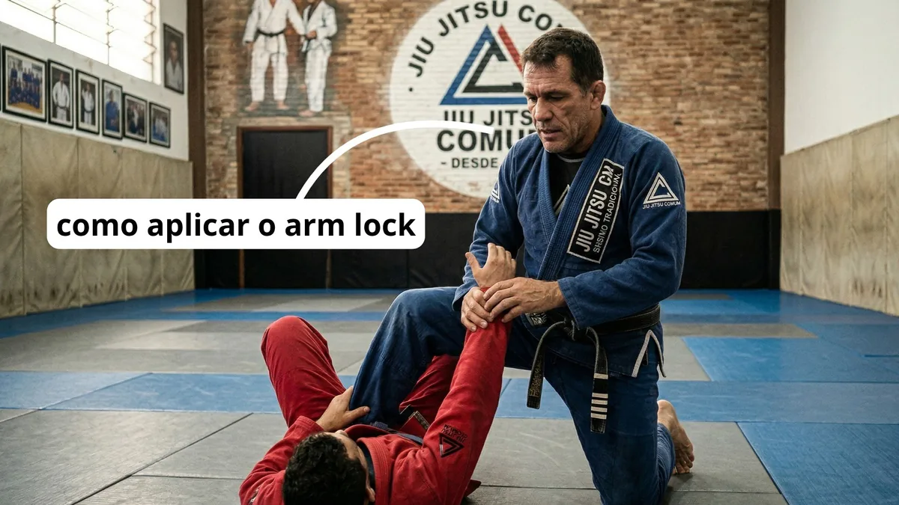
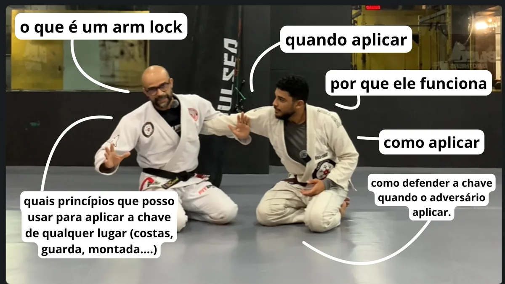
O método vira caminho
Comece pelo Mapa do Jiu-Jitsu. Cada aula prepara o terreno para a próxima, enquanto você aplica os conceitos desde o primeiro treino.
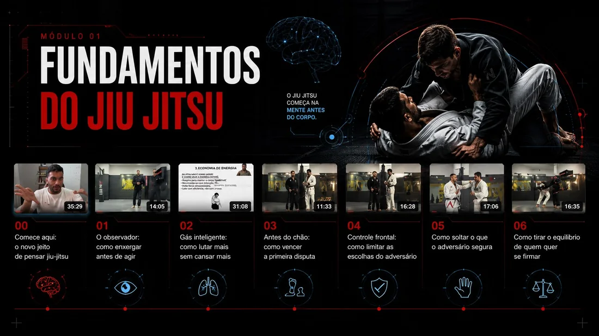
Estrutura, alavanca, equilíbrio, pressão, direção, espaço e respiração.
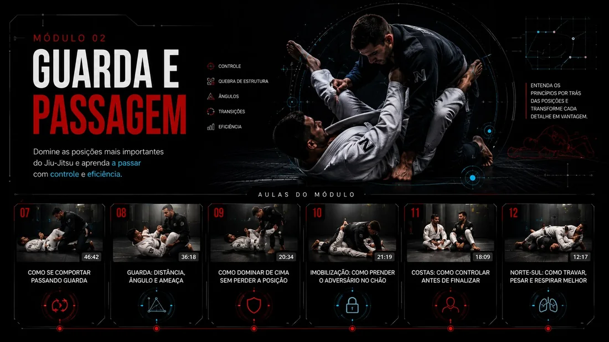
Os conceitos mecânicos que organizam essa disputa.
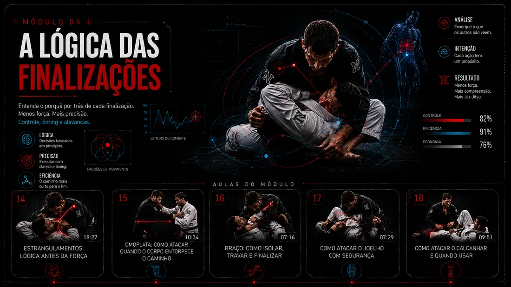
Isolamento, ângulo, alavanca e reação do adversário.
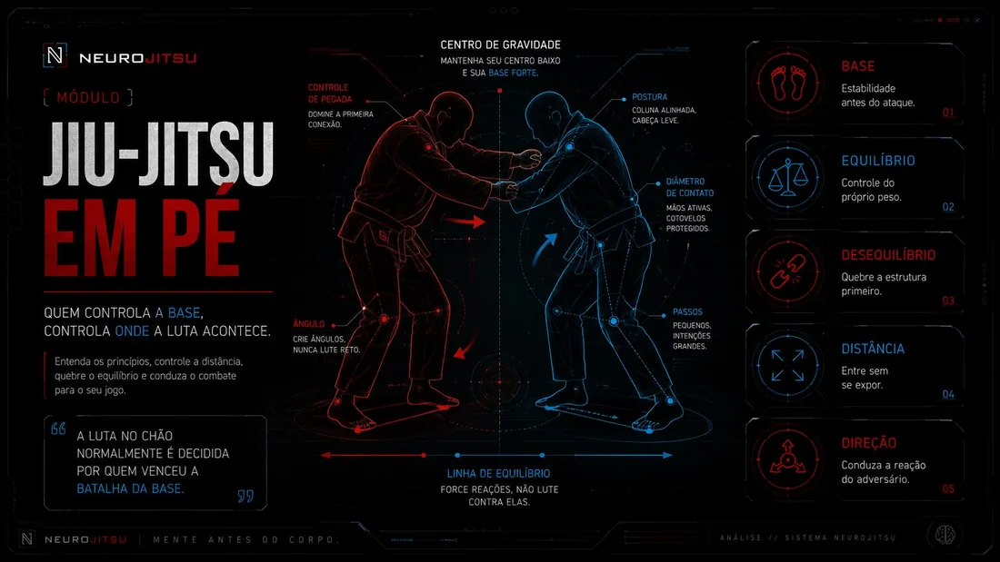
Pegadas, quedas, base, entrada e desequilíbrio.
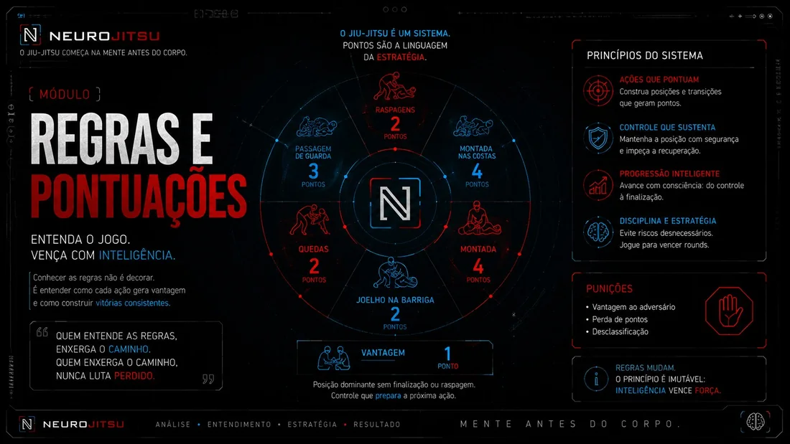
Pontuação, vantagens e leitura de arbitragem.
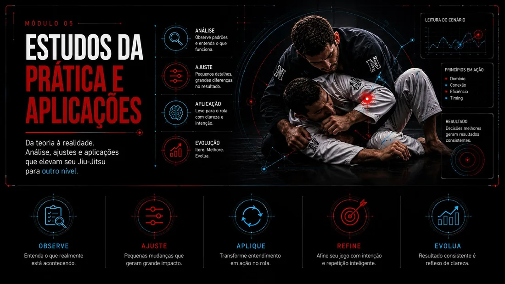
Observe, teste, revise e leve os conceitos para o rola.
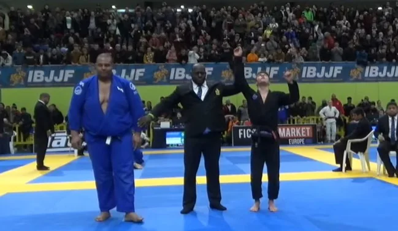
Inteligência de luta
Força, gás e flexibilidade ajudam. Mas é a capacidade de ler peso, base, espaço, alavanca e direção que coloca você no jogo contra gente maior e mais forte.
“Perigoso não é quem decora mais posições. É quem consegue pensar quando o rola aperta.”
Relatos curtos de quem deixou de apenas copiar movimentos e começou a enxergar o jogo.
Tony Iceberg
Joyce
Amanda
Cláudio
Didática de quem vive o tatame
O método traduz biomecânica, estratégia e experiência de treino em ideias simples de observar e aplicar.
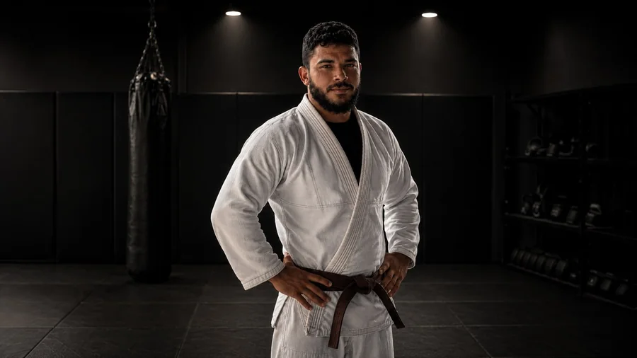
Professor de Jiu-Jitsu e criador do Neuro-Jitsu.
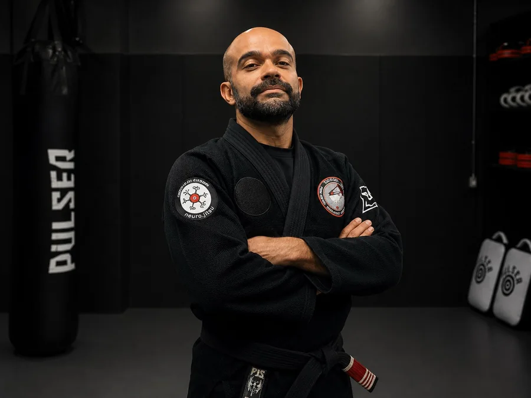
Faixa preta de Jiu-Jitsu e Judô, educador físico e professor.
Escolha seu acesso
O método é o mesmo. O que muda é por quanto tempo você quer ter o mapa ao seu lado.
ou R$ 497,64 à vista
ou R$ 1.497 à vista
Seu risco é zero
Você tem 7 dias de garantia conforme as condições da Hotmart. Se o Neuro-Jitsu não fizer sentido para você, basta solicitar o reembolso dentro do prazo.
Sim. O método organiza os fundamentos para você entender o que observar e aproveitar melhor o treino presencial desde o início.
Sim. Ele ajuda a organizar o repertório, revisar erros e ler contextos diferentes com mais consciência.
Não. Ele potencializa o que você aprende com seu professor e transforma seu treino presencial em um laboratório de aplicação.
O plano foi pensado para cerca de uma hora por semana: uma ideia por vez, levada diretamente para os seus treinos.
Na plataforma Hotmart, pelo celular, computador ou Smart TV. O acesso é enviado por e-mail após a confirmação do pagamento.
O conteúdo-base é o mesmo. O plano anual dá 12 meses de acesso; o vitalício não tem prazo para acabar e inclui os bônus indicados.
Seu próximo treino pode ser diferente